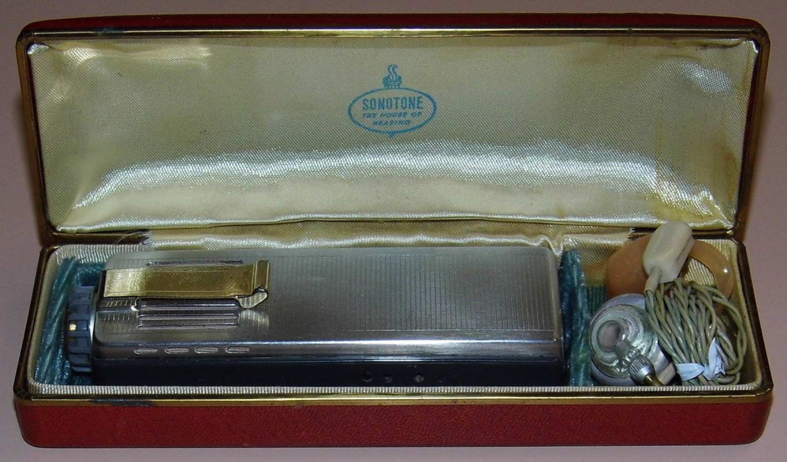

The heist
The Chords — a Black vocal group from the Bronx — recorded “Sh-Boom” (subtitled “Life Could Be a Dream”) in 1954, and it was climbing the R&B chart when the Crew-Cuts, a Toronto quartet formed in the city's early-50s vocal-group scene, cut their own version almost immediately. Their “Sh-Boom” was crisper, cornier, and — crucially — playable on white pop radio, which in 1954 largely meant the pop charts, while the Chords' original was confined to R&B formats. The result: the Crew-Cuts' version hit #1 on the pop charts and sold in the millions, while the original's success was capped. The pattern repeated across the decade, and “Sh-Boom” stands as its opening chapter.
The Toronto angle
For Canada, the story has a wrinkle worth sitting with. The Crew-Cuts were genuine products of Toronto's early-50s vocal-group scene, and their success made them among the first Canadian acts to conquer American pop radio — years before the Diamonds, before the Guess Who, before anyone had coined CanCon. They were celebrated at home as pioneers. They're remembered everywhere else as an object lesson. Both things are true, and the tension is the story: Canada's first rock chart-toppers arrived by way of a cover that outshone its originators.
The legacy
“Sh-Boom” itself is indestructible — a melody so sweet it survives every arrangement, and the Crew-Cuts' recording remains a beloved artifact of pre-rock pop. The ethical frame around it has only sharpened with time: modern retellings rightly center the Chords, and the episode is now standard curriculum in discussions of how rock and roll's Black foundations were, for a time, monetized by white interpreters. The Crew-Cuts' place in Canadian music history is secure but double-edged: the first to prove a Toronto act could top the US charts — and a permanent case study in the price of that particular door being opened the way it was.

Frequently asked questions
Who originally sang “Sh-Boom”?
The Chords, a Black vocal group from the Bronx, recorded the original in 1954; the Crew-Cuts' Toronto cover version became the bigger pop-chart hit.
Was “Sh-Boom” the first Canadian #1 in the US?
The Crew-Cuts' version topped the American pop charts in 1954, making them among the very first Canadian acts — arguably the first rock-era ones — to do so.
Who were the Crew-Cuts?
A white vocal quartet from Toronto, active in the 1950s, who became international stars with their cover of “Sh-Boom.”